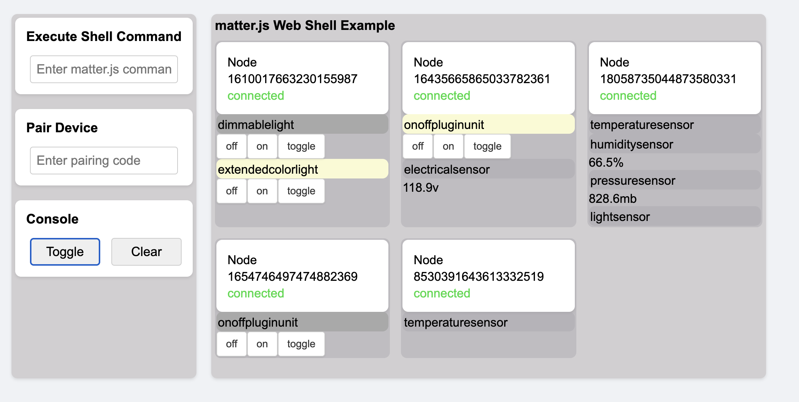
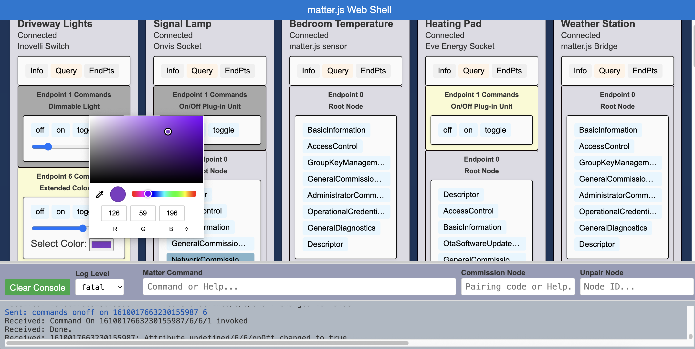
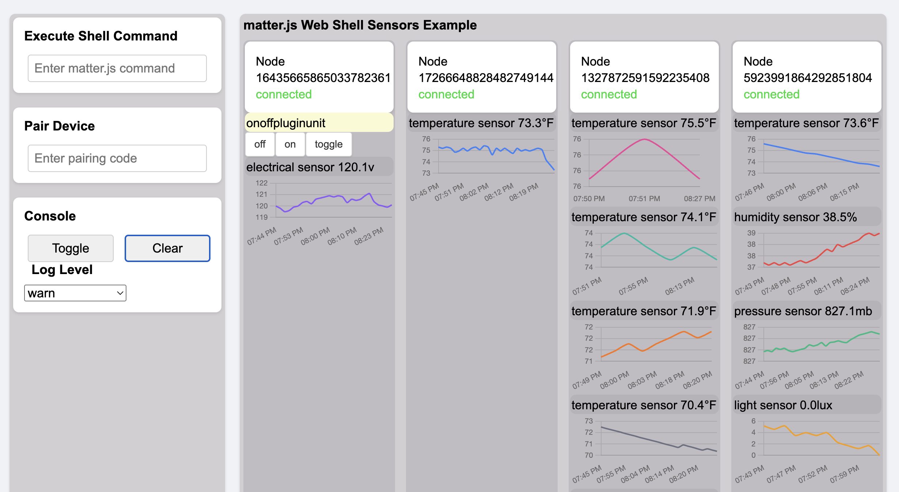

Example Tool
A simple interactive example to demonstrate Matter protocol behaviors and basic cluster commands.
Go to Example Tool

Matter Inspector
Inspect and monitor live data from Matter-enabled devices including clusters, endpoints, and attributes.
Go to Matter Inspector

Sensor Graphs
Graph live sensor data from Matter-enabled devices. Temperature, Humidity, Light, Pressure, Electrical
Go to Graphs Example